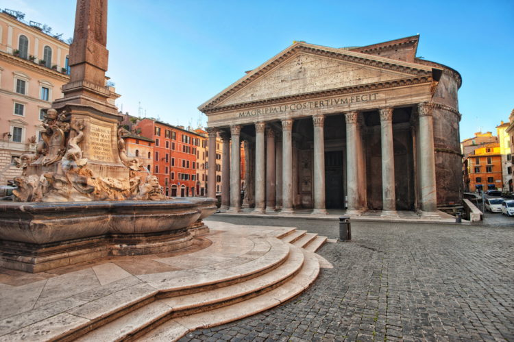

Главная страница | Исландия | Норвегия | Япония
Согласно римской историографии, город Рим был основан еще в 753 году до нашей эры; а всего два века спустя Рим стал столицей растущей Римской Империи. Античные римляне постепенно завоевывали средиземноморские территории и половину Европы, заложив основы современной цивилизации. Тогда как восточная Римская Империя продолжила свою историю до 1453 года, римское королевство в Италии прекратило свое существование из-за постоянных нашествий иноземных отрядов. Рим окончательно был захвачен Одоакром в 476 году нашей эры. Вскоре после распада Римской Империи Италия оказалась под влиянием новых европейских держав. Германцы, остготы и лонгобарды, сменяя друг друга, владели различными областями полуострова: Италия оставалась раздробленной вплоть до новых времен. В период борьбы за власть между Папой Римским и императором в северной и центральной части Италии образовались города-государства, оказывавшие значительное влияние на историю страны вплоть до новых времен.
Государство на юге Европы, на Апеннинском полуострове. На севере граничит со Швейцарией и Австрией, на востоке - со Словенией, на северо-западе - с Францией. Омывается на западе Лигурийским и Тирренским морями, на востоке - Адриатическим, на юге - Ионическим и Средиземным морями. Италии также принадлежат Эльба, Сицилия, Сардиния и целый ряд более мелких островов. Общая площадь - 301 тыс. кв. км.
В северной части Италии климат субтропический, плавно переходящий в умеренно-континентальный. Летом царит погода прекрасно подходящая для отдыха на пляже, в июле-августе 22-30°С. А вот зимой здесь не более 5°С, холодно и туманно. Средиземноморский климат властвует и над островами Италии: Сардинией и Сицилией. Большую часть года здесь солнечно и ясно. Летом жарко, средняя температура около 30°С (максимальная - в августе до 33°С), а зимой не очень-то и холодно 10-15°С (холоднее всего в феврале). Большинство осадков выпадают с ноября до марта. Любителям поплавать лучше приезжать в июле-августе, температура воды в эти месяцы будет самой комфортной, до 27°С, а вот зимой - не до купания, вода около 16°С. Дожди весной и летом крайне редки, так что можно смело отправляться на пляжный отдых в Италии под солнцем, меж голубым небом и водами.
Блюдо |
Описание |
Фотография |
|---|---|---|
Карпаччо |
Список того, что нужно попробовать в Италии из еды, невозможно представить без карпаччо – тонко нарезанных мясных или рыбных ломтиков, приправленных соусом с добавлением майонеза, оливкового масла, уксуса, лимонного сока. |
|
Ньокки |
Ньокки – достаточно простая итальянская еда, которая, тем не менее, считается одним из достойнейших образцов национальной местной кухни. Это блюдо представляет собой разновидность клецок, для приготовления которых повара берут муку, яйца, манную или кукурузную крупу и картофель. |
|
Ризотто |
Желая попробовать лучшие итальянские блюда, не обойдите вниманием ризотто – еду, ставшую одним из кулинарных символов страны. Основой для его приготовления служит круглозерный рис особых сортов, который сначала обжаривается, а затем тушится. Когда блюдо практически готово, в него добавляют морепродукты, мясной фарш, овощи или грибы – в зависимости от того, что хочет в итоге получить шеф-повар. |
Просматривая путеводитель и выбирая, что посмотреть в Италии, нельзя пропустить самый известный в мире анклав, которым является Ватикан. Каждое здание этого мини-государства является достопримечательностью, известной далеко за пределами страны. Здесь можно пройтись по аллеям знаменитых Садов Ватикана и своими глазами увидеть Папу, подняться на купол Собора Святого Петра, посетить Сикстинскую капеллу с ее бессмертными фресками, созданными Микеланджело, Боттичелли и другими великими живописцами.
Выбирая достопримечательности Италии, которые следует обязательно посетить в свой первый приезд, нельзя пропустить такое монументальное сооружение, как Римский Пантеон. Построенный изначально в 25 году до н.э., он несколько раз разрушался стихийными бедствиями, перестраивался и даже «сменил вероисповедание». Но до сих пор сотни людей ежедневно стремятся попасть под его своды, чтобы постоять под куполом, полюбоваться прекрасными фресками и статуями, ощутить одновременно дыхание вечности и неумолимую разрушительную силу времени.

Достопримечательности Италии невозможно представить без Колизея. Это огромный амфитеатр, возведенный еще в 72 году н.э. и ставший главным символом Римской империи. Это здание в свое время вмещало 55 тысяч человек, а слава о нем разносилась далеко за пределы страны. Даже при развитии современных технологий и наличия тяжелой строительной техники трудно осуществить строительство такого грандиозного сооружения. Поэтому, выбирая, что посмотреть в Италии, пропустить посещение Колизея нельзя.

Если спросить у миланцев, что посетить в Италии, они без раздумий назовут кафедральный собор, построенный в честь Рождества Пресвятой девы Марии и являющийся символом города. Данное монументальное здание способно одновременно вместить до 40 000 человек, что позволяет причислить его к одному из крупнейших готических храмов мира. Посещение данной достопримечательности Италии не обходится без поднятия на смотровую площадку, откуда открывается великолепная панорама города.